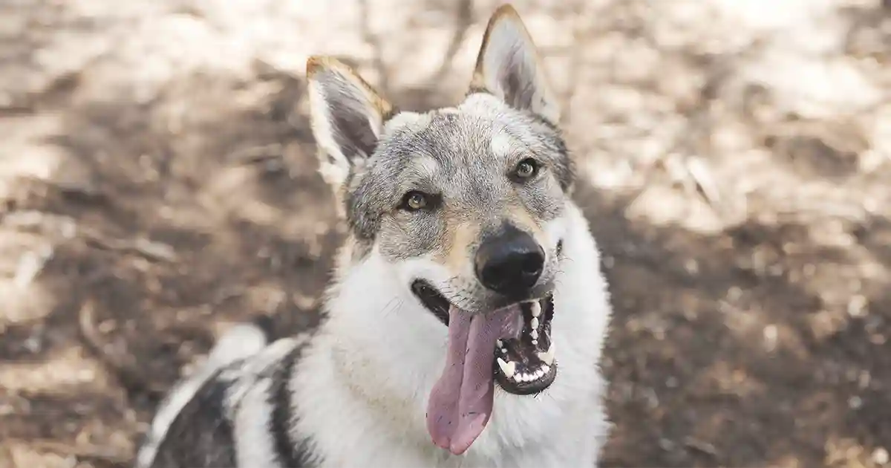

Presentación

El Perro Lobo es una raza de tamaño grande, de aspecto imponente y atlético, con pelaje denso que recuerda al lobo europeo. Su cuerpo es fuerte y bien proporcionado, con orejas erguidas y ojos expresivos que transmiten inteligencia y alerta. Esta apariencia salvaje y elegante lo distingue de otras razas grandes.
Personalidad
Tiene un carácter equilibrado, leal y protector. Es inteligente, atento y puede ser muy afectuoso con su familia, aunque requiere socialización y entrenamiento consistentes desde temprana edad para mantener un comportamiento estable. Disfruta de la actividad física y necesita ejercicio diario.
Origen
Esta raza se desarrolló a partir del cruce entre lobos y perros de trabajo, buscando combinar fuerza, resistencia y temperamento equilibrado. Su propósito original incluía tareas de vigilancia, protección y trabajo en exteriores, lo que explica su naturaleza alerta y enérgica.
Salud
En general es una raza saludable con una esperanza de vida de 12 a 14 años. Puede presentar problemas comunes en razas grandes, como displasia de cadera o codo, por lo que el seguimiento veterinario y el mantenimiento de un peso adecuado son esenciales para su bienestar a largo plazo.
Aseo
El pelaje requiere cepillados regulares para controlar la muda, especialmente durante los cambios estacionales. Además, conviene revisar periódicamente orejas, uñas y dientes para mantener la higiene y prevenir problemas de salud comunes en razas grandes.
Nutrición
Por su tamaño y nivel de actividad, necesita una dieta equilibrada adaptada a perros grandes, con raciones ajustadas a su edad y ejercicio diario. Es importante proporcionar proteínas de calidad, grasas saludables y nutrientes esenciales, junto con agua fresca siempre disponible.